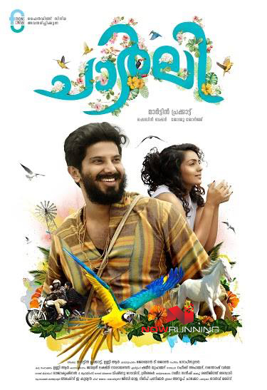
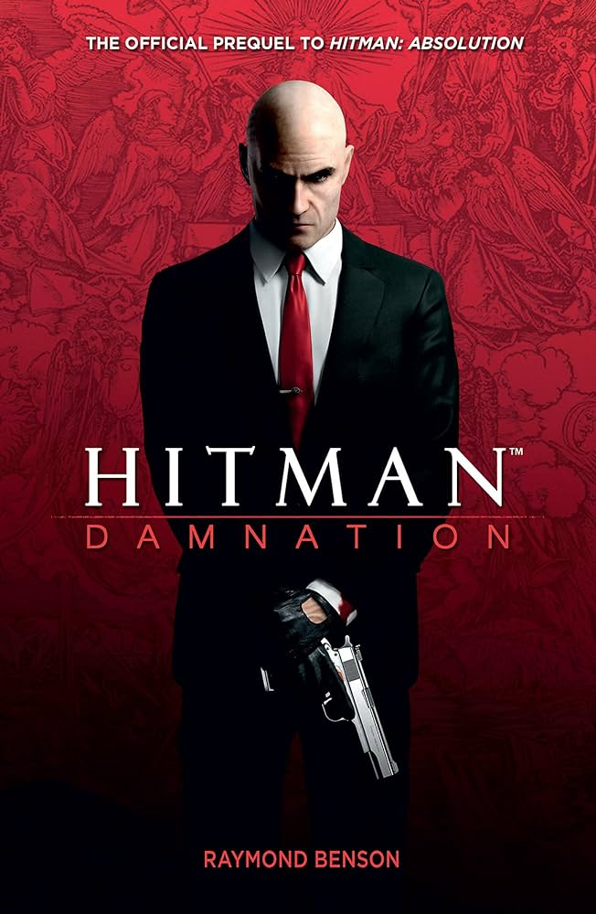

A young, nonconforming woman named Tessa gets entangled in a cat-and-mouse chase in the by-lanes of Kerala, hunting for a mysterious artist who previously lived in her apartment. Charlie is a young guy who loves to travel and believes in enjoying life to the fullest. He considers life to be a celebration and tries to bring happiness into the lives of the people around him. Tessa is a graphic artist with a sensitive outlook towards life. The film depicts the love story of Charlie and Tessa, and how their love influences the lives of the people around them.
The Social Network is a 2010 American biographical drama film directed by David Fincher and written by Aaron Sorkin, based on the 2009 book The Accidental Billionaires by Ben Mezrich. It portrays the founding of social networking website Facebook. It stars Jesse Eisenberg as Facebook founder Mark Zuckerberg, with Andrew Garfield as Eduardo Saverin, Justin Timberlake as Sean Parker, Armie Hammer as Cameron and Tyler Winklevoss, and Max Minghella as Divya Narendra. Neither Zuckerberg nor any other Facebook staff were involved with the project, although Saverin was a consultant for Mezrich's book.

Hitman is a 2007 French American action thriller film directed by Xavier Gens and based on the Hitman video game series. A gun-for-hire, Agent 47 is a genetically engineered assassin. He is hired by a group, 'The Organization' and becomes ensnared in a political conspiracy. He finds himself pursued by both Interpol and the Russian military. The film stars Timothy Olyphant, Olga Kurylenko, and Dougray Scott. Hitman was released on November 21, 2007.
